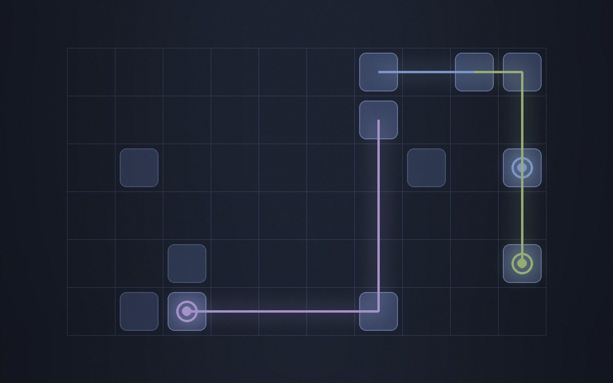

Twelve rooms, one record
Living room, hallway, bedroom: every room's dot paths land in the same file, grouped by room, ready to replay.
Project · Open source
Red Dot Tracker chases the dot across every wall and logs every pounce. For: project landing pages and product pages.

Living room, hallway, bedroom: every room's dot paths land in the same file, grouped by room, ready to replay.

The dot travels in straight lines and turns at every mirror. Watch long enough, and you know where it goes next.